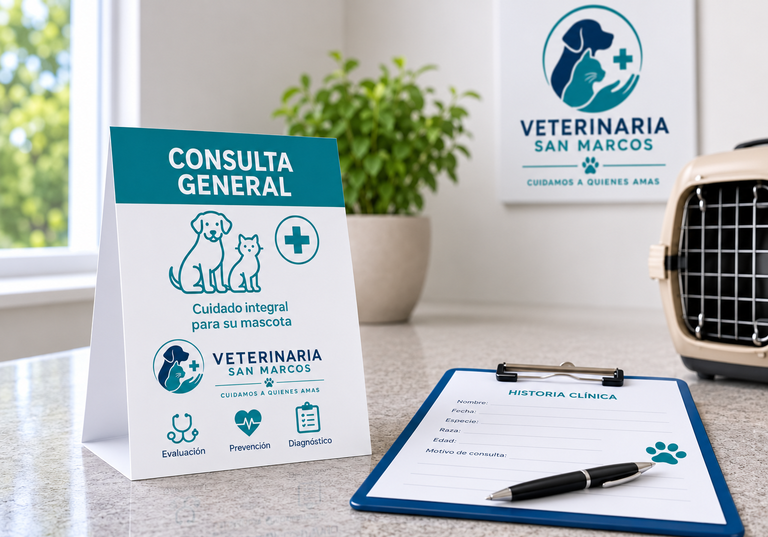
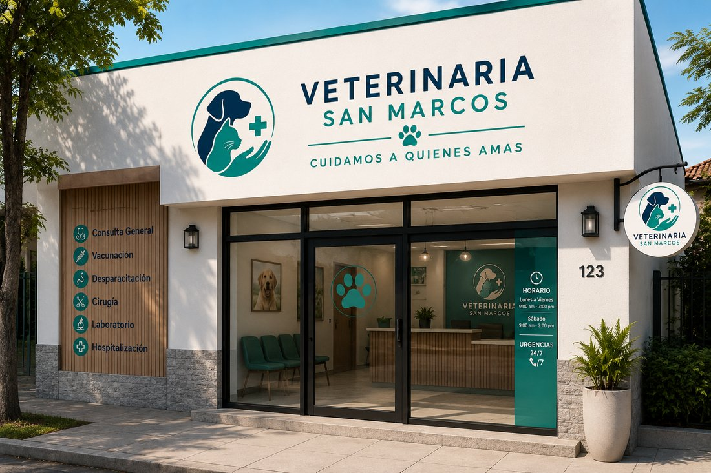
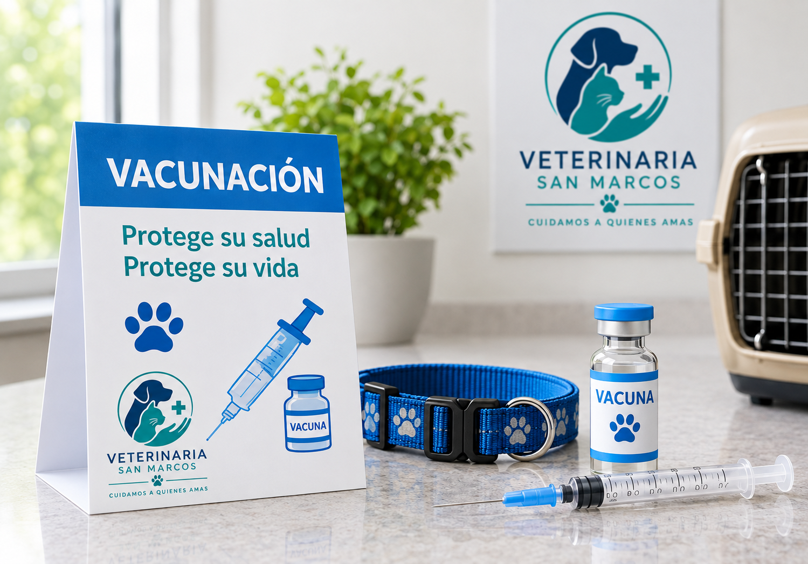
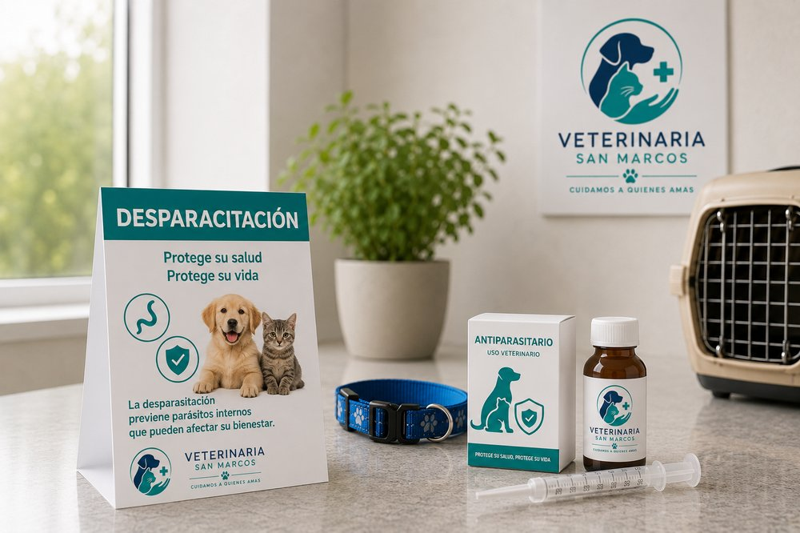

Consulta general
Evaluación completa de la salud de tu mascota con uno de nuestros médicos veterinarios.
Conocer la consulta generalClínica veterinaria en Rancagua
Acompañamos a las familias de Rancagua y a sus mascotas desde 2009, como si fueran parte de la nuestra. Nuestro equipo de especialistas está presente en cada etapa: para prevenir enfermedades, resolverlas a tiempo y ayudarte a disfrutar de tu regalón sano y feliz, sin la preocupación de no saber dónde acudir cuando lo necesites.


Evaluación completa de la salud de tu mascota con uno de nuestros médicos veterinarios.
Conocer la consulta general
Plan de vacunas al día para perros y gatos, con recordatorio de controles anuales.
Conocer la vacunación
Desparasitación interna y externa según el tamaño y la especie de tu mascota.
Ver todo el catálogo